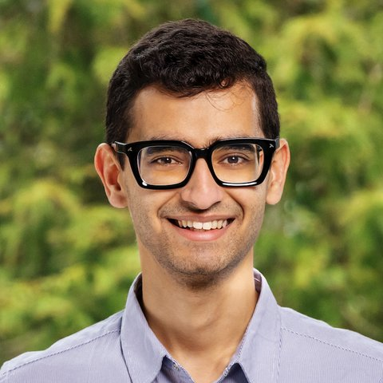
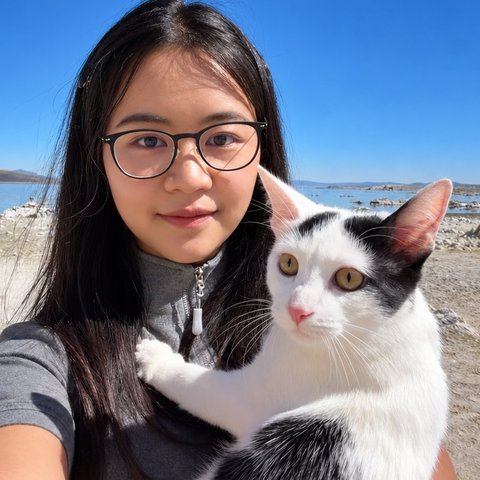
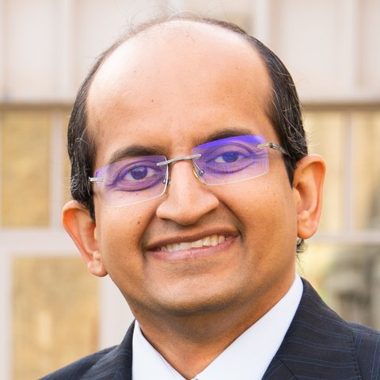

ICLR 2027 workshop · San Francisco, California
SciEval · The 1st Workshop on theScience of Evaluation
Advancing the science and practice of AI evaluation: from benchmarks and evaluators to infrastructure, and real-world claims.
Benchmarks now steer how models are built, selected, trained, and deployed, yet the evaluations themselves are rarely validated. SciEval brings together work on building better evaluations and on studying evaluation as a scientific object in its own right.
About
Why evaluation needs to become a rigorous, cumulative discipline.
Evaluation is a central component of modern AI research. Benchmarks shape model development, model selection, pretraining, post-training, and deployment, and increasingly inform decisions related to safety, auditing, procurement, and policy.
At the same time, AI systems are becoming substantially harder to evaluate. Their capabilities span a growing range of domains, modalities, and interaction settings; many outputs are open-ended or difficult to verify; and performance can depend strongly on prompts, tools, scaffolding, and execution environments. Evaluations themselves are increasingly exposed to the systems they measure through training data, model selection, reinforcement learning, and repeated benchmark use.
The Workshop on the Science of Evaluation (SciEval) brings together research across this broader evaluation landscape. We welcome both new benchmarks and evaluation frameworks across AI domains, and methodological work on meta-evaluation, robustness and reproducibility, statistical efficiency, learned and automated evaluators, agent and harness evaluation, evaluation integrity, infrastructure, and real-world validity. Our goal is to advance AI evaluation toward a more rigorous and cumulative technical discipline: one that develops better evaluations while also establishing principled methods for validating, maintaining, and interpreting them.
driving questions
How should we design evaluations for modern AI systems?
What benchmarks, tasks, environments, and protocols are needed across language, multimodal AI, scientific applications, robotics, embodied systems, and agents?
How can we determine whether an evaluation is valid, robust, and reproducible?
How should validity, reliability, calibration, uncertainty, and sensitivity to prompts, scaffolding, harnesses, and implementation choices be measured?
How much evaluation is necessary?
Can smaller or adaptive subsets preserve the rankings and conclusions of larger benchmarks, and how should we reason about redundancy, statistical power, and evaluation cost?
How should evaluations operate under optimization pressure?
How do contamination, memorization, benchmark overfitting, reward hacking, evaluator gaming, and test-time cheating affect evaluation validity?
How should we evaluate judges, agents, and evaluation systems themselves?
How should LLM judges, reward models, and verifiers be validated, and how can model capability be disentangled from the tools, harnesses, and environments surrounding an agent?
When do evaluation results generalize to the real world?
Which evaluations predict downstream utility, deployed behavior, robustness, or safety-relevant outcomes, and what claims can benchmark results legitimately support?
Call for Papers
Methodological and empirical work across the full lifecycle of AI evaluation.
SciEval welcomes research ranging from the construction of new benchmarks and domain-specific evaluation suites to methods for validating, stress-testing, interpreting, automating, and maintaining evaluation systems. We aim to represent evaluation problems across a broad range of AI systems, application domains, and deployment settings. Relevant topics include, but are not limited to:
Benchmarks and domain-specific evaluation
New benchmarks and suites for language and multimodal models, code, search, recommendation, finance, healthcare, law, education, cybersecurity, AI for Science, robotics, embodied AI, and autonomous systems.
Meta-evaluation: validity, robustness, reproducibility
Construct and predictive validity, reliability, calibration, item analysis, benchmark saturation, uncertainty quantification, and robustness to prompts, decoding, scaffolding, and harnesses.
Statistical efficiency and evaluation design
Benchmark redundancy, subset selection, adaptive testing, test compression, power analysis, sample efficiency, and preserving conclusions with far fewer evaluations.
Evaluation under optimization pressure
Contamination, memorization, overfitting, Goodhart effects, reward hacking, verifier exploitation, evaluator gaming, and dynamic, private, adversarial, or continually refreshed evaluations.
LLM-as-a-judge, reward models, and verifiers
Design and validation of learned evaluators: calibration, bias, consistency, disagreement, adversarial robustness, and alignment with human judgments or task outcomes.
Automatic and agentic evaluation
Automatic benchmark generation, task synthesis, adversarial test generation, rubric construction, adaptive evaluation, and agents that autonomously identify model weaknesses.
Agents, harnesses, and interactive systems
Evaluating long-horizon and tool-using agents, including the effects of tools, memory, interfaces, execution environments, and harness design on measured capability.
Evaluation integrity
Detecting and preventing benchmark answer lookup, unauthorized tool or Internet use, environment exploitation, judge manipulation, and other behaviors that invalidate conclusions.
Evaluation infrastructure and lifecycle
Harnesses, standardized protocols, provenance and versioning, contamination auditing, reproducible infrastructure, continuous evaluation, and cost-aware evaluation.
From evaluation to real-world claims
External validity, cross-domain generalization, deployment-oriented evaluation, auditing, capability forecasting, and what real-world conclusions evaluation evidence can support.
Beyond machine learning
Psychometrics has a century of work on validating instruments, and clinical-trial methodology has a mature treatment of power, preregistration, and multiplicity. We explicitly invite submissions from these and other measurement communities, including work that tests where those traditions do and do not transfer to machine learning.
Submission
Submissions are handled through OpenReview with double-blind review. Papers are non-archival and use the ICLR LaTeX template, with 4–8 pages of main text excluding references and appendices. Accepted papers are presented as posters, and four are selected for contributed talks. Work previously published at major machine learning venues (ICLR, ICML, NeurIPS) is discouraged. The submission link will be posted here when the call opens.
LLM usage policy
LLMs may be used as general-purpose assistance tools. If they contributed substantially to research ideation or writing, authors must include a separate “LLM Usage” section (typically in the appendix, excluded from the page limit) describing their role; failure to disclose significant use may result in desk rejection. Authors bear full responsibility for all content, and LLMs cannot be credited as authors.
Important Dates
Tentative, following the ICLR 2027 workshop timeline.
Paper submission deadlinedeadline
Feb 1, 2027Author notification; accepted papers public on OpenReview
Feb 26, 2027Final program announced
Apr 14, 2027Workshop at ICLR 2027, San Franciscoworkshop
Apr 29 or 30, 2027Notification is by 11:59 p.m. AoE on February 26, 2027. The workshop day will be assigned by ICLR.
Speakers
Researchers with diverse backgrounds, affiliations, and areas of expertise.

Schedule
Tentative. April 29 or 30, 2027, subject to the date assigned by ICLR. A full-day hybrid event, 09:00–18:00. Times are local.
morning
afternoon
Ten invited talks
30 minutes each, including five minutes of questions.
Four contributed talks
10 minutes each, selected from accepted papers.
Two poster & discussion sessions
One in each half of the day, moderated around questions raised by that half-day’s talks.
Hybrid
All talks and Q&A are live-streamed on Zoom and recorded; audience questions are collected through sli.do.
Organizers
From Ph.D. students to full professors, across academia and industry.


Get Involved
An open, accessible workshop for in-person and remote attendees.
Remote-friendly
Talks and Q&A are live-streamed on Zoom, questions are collected on sli.do, and accepted papers, recordings, and other materials will be posted on this website.
Registration grants
We plan to offer registration fee grants for participants who might otherwise be unable to attend.
Reviewer mentorship
Junior reviewers are paired with senior reviewers and receive feedback as they write their reviews.
Double-blind review
All submissions are reviewed double-blind on OpenReview to reduce institutional and author bias.